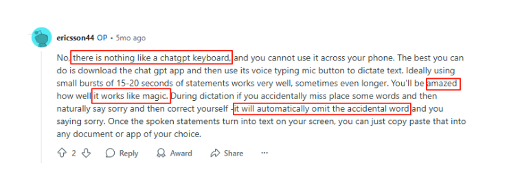
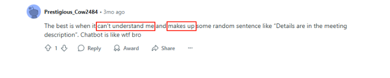
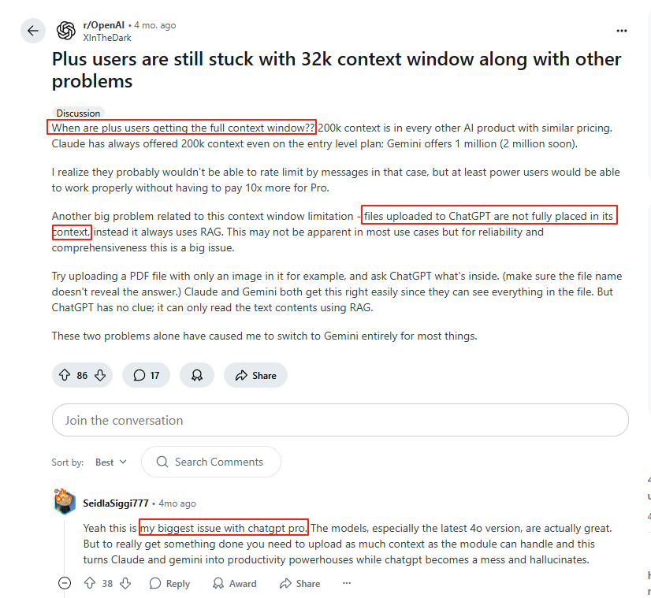
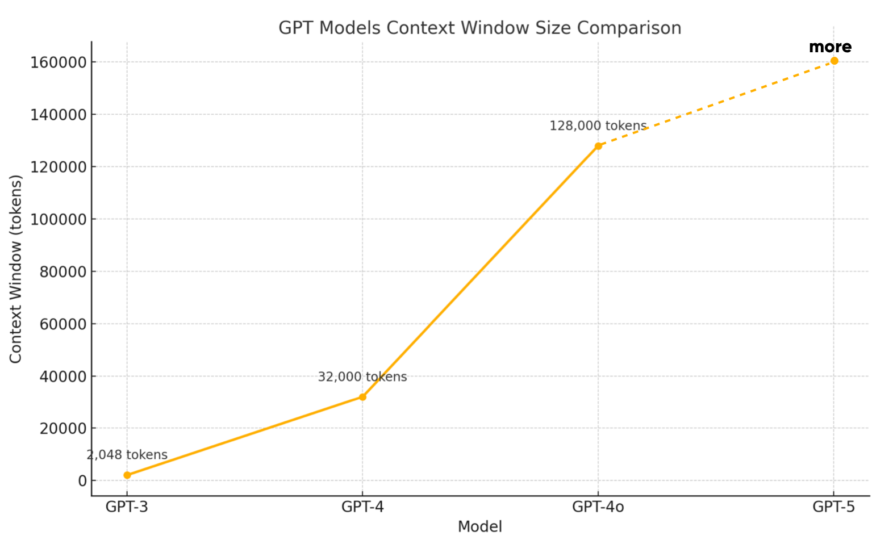
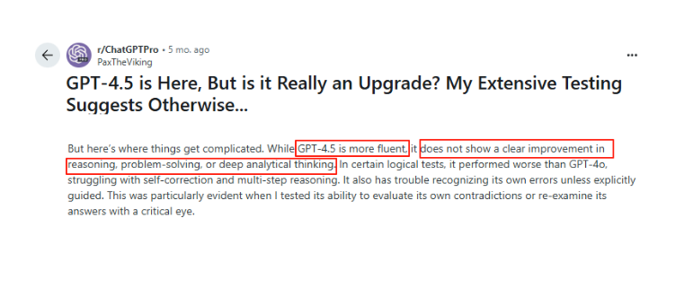
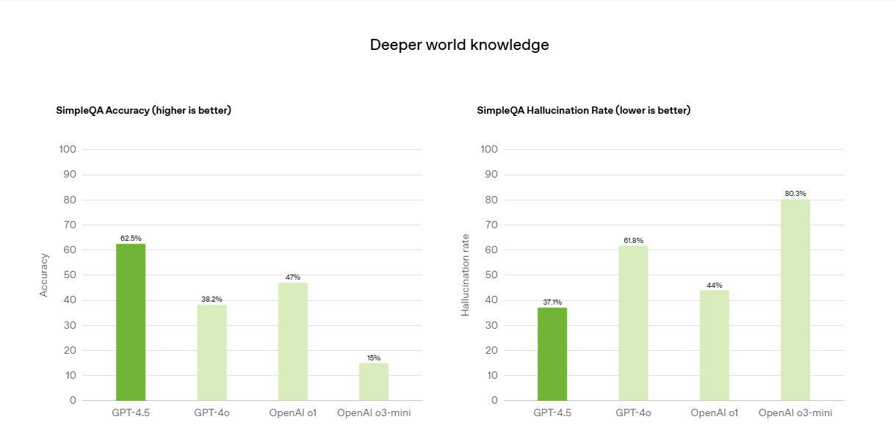
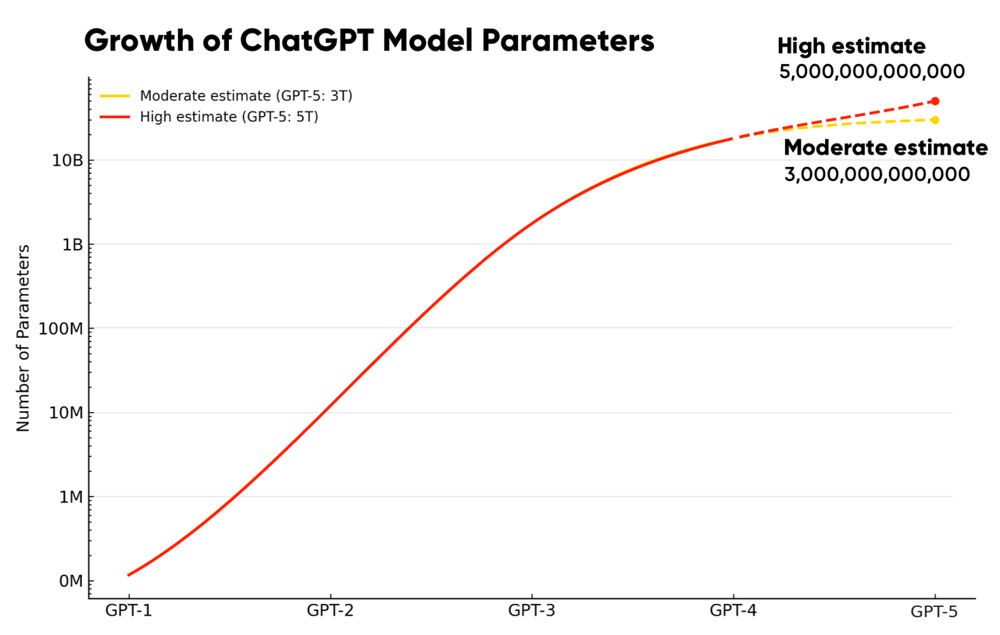
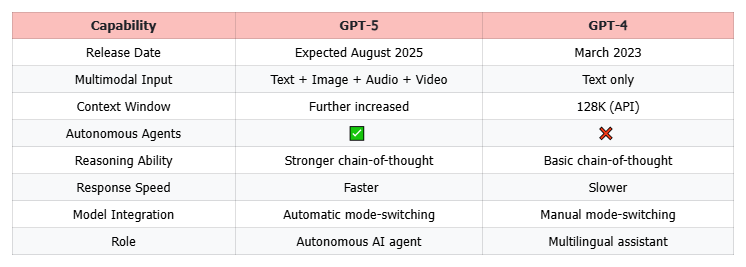

GPT-5 于 2025 年 8 月发布：你需要了解的一切

GPT-4.5 的发布，加上 OpenAI 首席执行官 Sam Altman 多次暗示新模型"非常值得等待"，标志着 GPT-5 的发布倒计时已经开始。
自 2023 年奥特曼首次公开证实 GPT-5 的存在以来，有关它的传闻就从未停止过。
在过去的几个月里，我们听到了 Altman 和开发人员的多次爆料，声称它将能够自主执行任务。这是否意味着 ChatGPT 5 已经具备了认知能力，可以开始独立思考？它距离通用人工智能 (AGI) 的距离是否已经进一步缩短？
今天，本文将结合 Altman 在 X(原 Twitter)上的声明、开发者社区泄露的细节以及广泛的用户讨论来预测 ChatGPT 5 的具体发布日期以及我们可以期待的功能。
GPT-5 何时发布？
据The Verge、Axios等媒体近期报道(2025年7月24日)，ChatGPT预计将于2025年8月初发布。
早在2023年3月，未来生命研究所的一封公开信就首次提到了ChatGPT 5.0。
同年 11 月，Sam Altman首次确认 GPT-5 的开发，并表示目前仍处于早期阶段：
在我们训练模型之前，这是一个有趣的猜谜游戏......我无法肯定地说它能做什么而 GPT-4 不能做到的。
尽管当时没有提到具体的时间表，但许多用户仍然热切期待 GPT 5.0。
一年后，两位熟悉 OpenAI 计划的消息人士透露，GPT 5.0 预计将于 2024 年夏季推出，甚至表示一些企业客户已经预览了演示版本。
然而，事情并没有按照计划进行，到 2025 年，GPT-5 仍未发布。
直到2025年2月，Altman才开始在X(推特)上暗示GPT-5即将发布。他分享了一份公开的路线图，明确提到GPT-4.5正在准备发布，GPT-5也将紧随其后。然而，他只给出了一个模糊的时间表，即"几周或几个月"。
随后，6月中旬，Sam Altman 在 OpenAI 官方 YouTube 频道的视频播客中发表声明，称 GPT-5"可能会在今年夏天(2025 年)的某个时候发布"。
由此，The Verge、Axios等媒体关于备受期待的GPT-5模型将于今年8月发布的报道得到了证实。
总的来说，GPT-5 早就被人们期待，但 OpenAI 的发布计划却多次更改。从 Sam Altman 在 X 上的帖子来看，不仅可以预测即将发布的版本，而且文中还暗示 GPT-5 的整体功能将得到显著增强，并将引入新功能。
竞争模型可能会加速聊天GPT 5发布日期
在我们等待GPT 5的同时，人工智能市场已经热闹非凡。尽管ChatGPT在2023年取得了革命性的突破，但其竞争对手也推出了各种模型。
谷歌的 Gemini 1.5 Pro 就是一个典型的例子，通过对比 Gemini 与 ChatGPT，其在文本理解和处理方面的表现被普遍认为全面超越了 GPT-4。
它最大的优势在于强大的生态系统集成能力，可以帮你汇总和起草对Gmail收件箱中未读邮件的回复，或者从Google Docs中提取数据生成报告。
相比之下，由于安全策略和权限限制，ChatGPT 通常仅限于基于浏览器的使用，因此难以与许多网站和服务直接集成。
今年，人工智能的热潮也超越了欧美。中国的DeepSeek-R1模型引发了全球热议，它在数学、编程、推理等基准任务上的表现已经与GPT-4o相当。
有趣的是，一些"一体化"的AI工具平台也应运而生，环球巴士就是其中一个例子。
你无需每月支付五六个平台的费用，它提供多模型访问权限。只需一个帐户，即可使用 ChatGPT 4 、Claude、Gemini，甚至集成 Midjourney、AI 图像生成、AI 视频生成和其他实用的 AI 功能。
或许，GPT-5 之所以在此时不断被"炒作"，是为了避免落后。GPT-5 不仅要更强大，更要更智能，上线速度更快，才能保持"AI 顶尖选手"的地位。
为什么 GPT-5 发布的时间比预期的要晚？
尽管外界普遍猜测GPT 5将于2025年8月初发布，但其发布日期实际上已被多次推迟。
早在2025年4月，Sam Altman就在X(原Twitter)上发文，暗示开发过程遇到了很多挑战，计划可能会发生变化，需要推迟发布。
GPT 5.0 延迟发布的核心原因之一是安全问题。随着 GPT 模型变得越来越强大，其内容输出也变得越来越难以预测和控制。如果系统没有得到充分的限制，可能会产生以下令人担忧的后果：
- 伪造文件或证明材料
- 精准的欺诈内容(例如伪造电子邮件或网络钓鱼策略)
- 黑客指令或绕过技术措施
2023年，ChatGPT 遭遇安全问题，导致用户隐私泄露。该漏洞导致部分用户短暂看到其他人的聊天标题，以及ChatGPT Plus用户的付款信息，包括姓名、电子邮件、信用卡后四位数字和到期日期。
此次事件促使OpenAI变得更加谨慎，在安全测试、隐私保护和模型拒绝机制方面投入了更多资源。
迟做总比不做好，OpenAI 选择放慢速度而不是急于更快地发布，等待技术、道德和安全方面更成熟的发布窗口。
GPT-5 有哪些特点？
尽管 Sam Altman 一直让我们猜测 GPT-5 的具体功能，但我们已经可以从他过去几个月对 X 的评论、开发人员的泄密以及多家科技媒体的分析中拼凑出一个初步的轮廓。
他在7月19日的X上提到：
周六早早起床，花了几个小时尝试用我们的新模型做一个小型编码项目。5分钟就搞定了。效果非常好……不知道我感觉如何……
虽然他没有明确说明这是 GPT-5，但根据时间和描述，可以推断他正在测试这个即将推出的 GPT-5 模型。
那么，究竟是什么让 GPT-5 变得"好"呢？
增强的多模式能力
目前，GPT 模型已经具备较为成熟的文本和图像交互能力，而 GPT-4o 的更新更是首次将语音对话引入日常场景，用户无需再依赖键盘输入即可与 GPT 进行对话并获得反馈。
在 Reddit 上，许多用户对 ChatGPT 的语音交互给出了积极的反馈。一位用户提到，当他犯错时，只需添加"抱歉"一词，模型就能智能地识别出前面文本的本意，自动忽略错误部分，并给出更精准的回复。
这种"纠错体验"是用户在使用语音输入时感受到的智能亮点之一。当然，也有用户指出，ChatGPT 偶尔仍存在"听错"或"捏造"信息的问题。
此类问题在语音AI中很常见，但对用户信任来说仍然是一个挑战，这也正是用户对GPT-5寄予厚望的原因。
GPT-5 将进一步增强语音模型的理解能力，降低出现幻听的可能性。它不仅要让你"说得清楚"，还要"理解你"，掌握你说话的语气、逻辑，甚至背后的意图。
与此同时，受 Sora 视频模型发布的启发，许多用户也期待 OpenAI 能将视频理解能力融入 ChatGPT。虽然答案尚不明确，但根据 Altman 在不同场景下对"多模态升级"的暗示，GPT-5 很可能会将视频作为其多模态升级的关键组成部分。
更大的文本窗口
ChatGPT 4 更新后，其上下文窗口得到了显著扩展，现在最多支持 128K 个 token(相当于一份 100 页的 PDF 报告)。不过需要注意的是，目前只有使用 OpenAI API 的开发者才能享受此容量。
对于普通用户来说，ChatGPT Plus 订阅仍然支持最多 32K 个令牌(约 25，000 个单词)，相当于约 45 页 PDF 文档的容量。
尽管如此，我们仍然可以看到 GPT 模型在上下文长度方面不断进步。从最早仅支持 2048 个 token 的 GPT-3，到现在支持 128K token 的 4.0/4o 版本。
然而，当我们将其与 Claude 等替代产品进行比较时，我们可以看到它仍有改进的空间。Anthropic 的 Claude 2.1 已经支持超过 200K 个标记(约 150，000 个单词)的输入，这对于需要处理超长文档或大型代码库的用户来说具有显著的优势。
人们普遍预测 GPT-5 将进一步扩展其上下文窗口，不仅提高其处理长文档的能力，而且还增强其跟踪和理解复杂对话的能力。
更强的推理
在GPT-4.5中，OpenAI首次引入了推理痕迹，这意味着当面对复杂问题时，它可以先将问题分解，然后逐步推理，最终得出结论。
不过，奥特曼表示，这将是GPT最后一个"非思维链模型"。
接下来我们将发布 GPT-4.5，即我们内部称之为 Orion 的模型，作为我们最后一个非思维链模型。
换句话说，GPT-5 将开始真正进行"类人推理"。用户反馈证实了这一点。尽管 GPT-4.5 在某些任务中确实展现出了更强的分析能力，但许多人仍然认为，它在推理复杂问题时容易出现"冗余弯路"和"逻辑脱节"等问题。
这也让我们对 GPT-5 的到来充满期待。它不仅会延续推理痕迹，还会进一步优化"思维链"，推理过程将变得更短更清晰，避免不必要的冗长，直接呈现关键步骤。
幻觉减少
什么是"幻觉"？它指的是人工智能捏造不存在的信息。ChatGPT 经常表现出这种行为，尤其是在理解不太常见的语言时，例如虚构的文学作品或虚构的事件。
不过，奥特曼强调，GPT-5 的关键改进之一是可靠性，具体来说就是尽可能减少幻觉。
为了减少幻觉，OpenAI 正在使用强化训练数据和更严格的拒绝机制来降低幻觉发生率。这一比率已从03 模型的 80.3% 降低到4.5 模型的 37.1%，预计在 GPT-5 中将进一步降低到 15%。
自主代理功能
在 GPT-5 的所有功能更新中，"自主代理"无疑是最具创新性的突破之一。借助此功能，你可以调用 AI 代理来自主执行任务。Sam Altman 暗示 GPT-5 将具有"调用工具和代理系统"的能力。换句话说，它可以：
- 自主管理工作流程
- 在睡觉时进行研究
- 编写、测试和部署完整的应用程序
关键在于它能够自主规划并执行一系列操作，无需每一步都手动指导。相比过去需要GPT一步步引导或手动调用工具，GPT-5现在拥有了主动性和"思考"能力。
更多参数
打个简单的比方，参数就像人的记忆，参数越多，AI 知道的就越多。有用户担心："GPT-5 的参数会不会特别多？"
虽然官方自 GPT-3.5 以来就没有公开过参数数量，但曾有一些毫无根据的传言称其将拥有一个拥有 100 万亿个参数的模型，但这些都已被 Sam Altman 明确驳斥。
一些业内人士和分析师估计参数数量在3到5万亿之间。
然而，更多的参数并不一定意味着你的AI助手更聪明。GPT 5不仅仅是参数的简单增加，还需要训练它明智地使用这些参数。
Chat GPT 4 与 5
在 2023 年接受 Lex Fridman 播客采访时，Sam Altman 罕见地对自己的产品提出了批评，指出 GPT-4 和 GPT-3 都比 GPT-5 略逊一筹。他补充道："我预计 GPT-5 和 GPT-4 之间的差距将与 GPT-4 和 GPT-3 之间的差距相同……"
为了预测 GPT-5 将会有多强大，我们先来回顾一下 GPT-4 和 GPT-3 的核心区别：
- 更大的参数规模： 这意味着它可以通过更新的输入处理更复杂的信息。
- 更少的"幻觉"： 与 GPT-3 相比，GPT-4 的反应更可靠，捏造的可能性更低。
- 更多语言支持： 支持26种语言，即使在非英语环境下也有出色的表现。
- 增强多模态能力： GPT-4增加了对图像输入的支持，后来的GPT-4O增加了对语音输入的支持。
- 扩展上下文窗口： GPT-4 的最大上下文窗口已扩展到 128K 个标记，使其能够处理整本书或大规模代码。
GPT-5 的升级建立在这些基础能力之上，包括增强的上下文处理、更强大的多模态交互、更高质量的推理链和更智能的任务代理能力。
让我们看一下详细列出 GPT 4 和 5 之间差异的表格：
GPT-5 有望在几乎所有维度上实现重大飞跃。其中最大的变化之一是在 GPT-5 中引入了自主代理。这些代理可以独立管理任务并调用外部工具。与 GPT-4 相比，GPT-5 更像是一个助手，而不是一个"强大的搜索引擎"。
GPT-5 的另一个真正颠覆性的变化在于其 产品架构 的重新设计。
Altman 在 X 上的帖子中表示，"目前，OpenAI 的产品分类过于复杂。"用户在处理复杂的数学或逻辑任务时，经常需要手动从默认的 GPT-4o 模型切换到 o1 或 o3 模型。
相比GPT-4，GPT-5将把OpenAI所有核心模型(GPT系列+o系列)整合成统一的超级模型，用户不再需要选择模型版本。
正如 Sam Altman 所说，GPT-5 将"知道何时需要长时间思考，何时不需要"。因为它会根据你的输入自动识别你的需求，并激活相应的能力模块。
下一步是什么？
GPT-5 将 重新定义人工智能 ，正如 X 上最近神秘透露的那样：
我们的研究团队做了一些出乎意料且非常了不起的事情，我们认为这非常值得等待，但需要更长的时间。
我们尚不清楚 GPT-5 究竟会有多么神奇，但这番表态足以吊足大家的胃口。或许它会是一种全新的人机交互方式，又或许是一个更加强大的思维代理系统。
有些人甚至可能会再次提出这个问题：GPT-5 会是 AGI 吗？
AGI是指能够像人类一样理解任何领域，具有认知和自主学习能力的智能机器。
从目前透露的几个线索来看，GPT 5.0 显然比 GPT-4o 和 GPT-4.5 更加智能 ，并且 更善于理解人类语言逻辑。
它不仅可以与你交谈、帮助你编程和编写报告，还可以调用工具、控制流程并自动执行命令。
这听起来像是人工智能获得了自主权？然而，关键在于，它仍然不会思考"为什么要这样做"，也没有主观意图。它执行任务的基础仍然是海量的训练数据和复杂的算法。
因此，GPT-5 可能不是 AGI，但它很可能是 AGI 时代到来之前最接近 AGI 的东西。
所有这些问题都可能在 GPT-5 中得到解答。我们即将迎来那令人期待的"几周后"。
常问问题
ChatGPT 5 发布了吗？
没有。截至目前，OpenAI 尚未正式发布 ChatGPT-5。然而，根据一系列泄密消息和内部人士的声明，人们普遍预计它将在 2025 年 8 月初至 8 月中旬发布。
ChatGPT 5 比 ChatGPT 4 好多少？
ChatGPT-5 将比 ChatGPT-4 更加智能。它将拥有更强大的多模态理解能力、更快的响应速度和更少的错误率。它还能更好地理解上下文并执行复杂的指令。
ChatGPT 的最新版本是什么？
截至 2025 年 7 月，GPT-4.5 是我们的最新模型。它可以处理文本、图像和音频，并且模式识别能力有所提升，幻觉也减少了——但它并不能取代 ChatGPT 界面中的 GPT-4o。